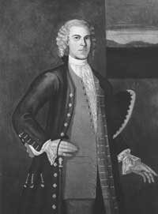

|
by Stefan Bielinski Johannes E. Wendell was born in Albany in June 1713. He was the second oldest of the ten children of Albany attorney Evert Wendell and his wife, Engeltie Lansing Wendell. As the first son, he was raised to follow in the profession of his eminently successful father. Practicing law by the early 1740s, he would inherit his father's law books and surveying instruments. Prior to his father's death in 1750, perhaps his practice was centered more in Schenectady. At age twenty-seven, he married minister's daughter Maria Catharina Van Santvoort in the Schenectady Dutch church in 1741. The marriage produced five children - the last baptized in Albany in 1751! Already established and heir to his father's extensive legal practice, he received only a small share of Evert Wendell's substantial estate. Following the death of his father, he settled in Albany where he was elected to the common council as an assistant alderman for the first ward in 1750 and 1751. A promising career was cut short by his death in September 1751 at the age of thirty-eight. His widow was named on the city census in 1756.
Photo of a color portrait of Johannes Wendell by Nehemiah Partridge. Inscribed "Aged 23, 1737." Collection of the Albany Institute of History and Art. last revised 9/25/03 |